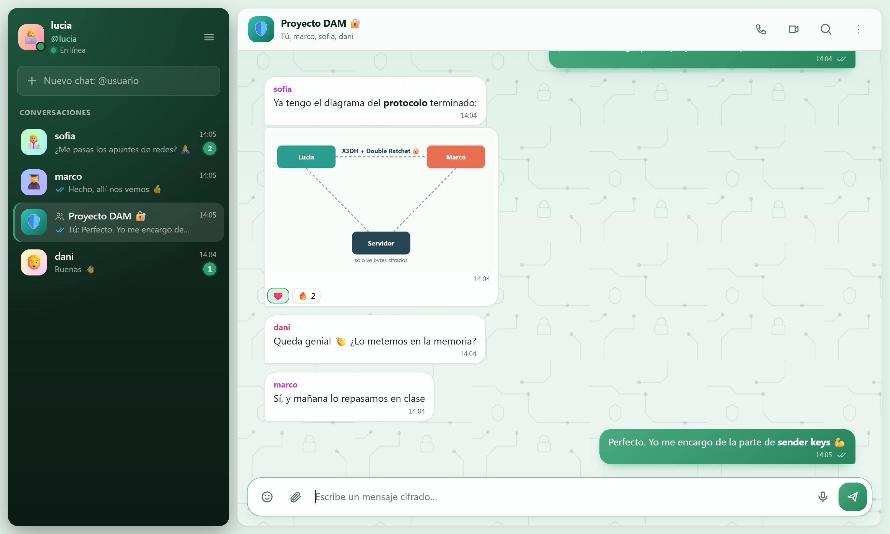
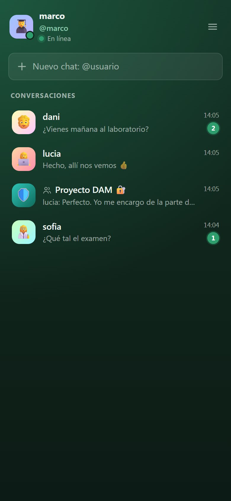
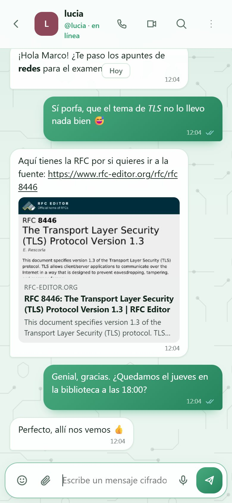
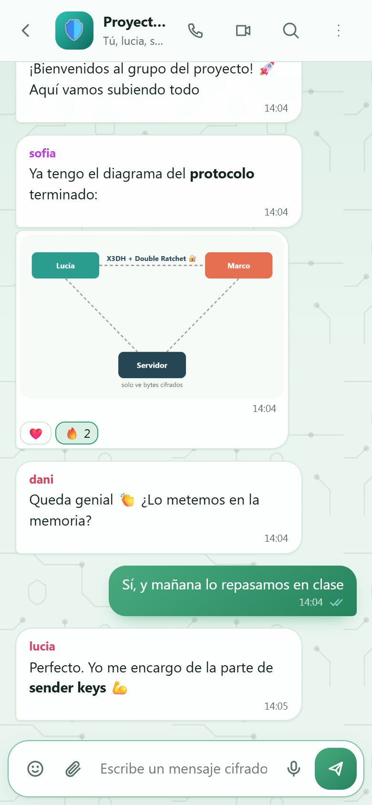

Tus mensajes, solo para ti
Chats, llamadas, grupos, fotos y notas de voz que se cifran en tu dispositivo antes de salir. El servidor solo reenvía datos ilegibles: ni siquiera sabe quién te escribe.

Todo lo de una app de mensajería
Lo que esperas de WhatsApp o Signal, con el cifrado hecho en tu dispositivo y un servidor que no puede leer nada.
Chats y grupos
Responder, reaccionar, editar, borrar para todos, encuestas, mensajes fijados, destacados y programados. Grupos con administradores y normas.
Llamadas y videollamadas
1 a 1 y en grupo, cifradas de punto a punto (WebRTC). Suenan aunque tengas la app cerrada.
Fotos, vídeos y voz
Fotos, GIF, vídeos, documentos, notas de voz y stickers propios. Opción de «ver una vez» antes de enviar.
Mensajes temporales
Se borran solos de todos los dispositivos tras 24 horas, 7 o 90 días.
Varios dispositivos
Móvil y ordenador a la vez, y pasas tus chats a un dispositivo nuevo cifrados de extremo a extremo.
Bloquear y solicitudes
Lo que te escribe un desconocido llega como solicitud. Bloquea o denuncia en un toque.
Bloqueo de la app
PIN y huella, cara o Windows Hello. Copias de seguridad cifradas y código de recuperación.
A tu gusto
15 temas claros y oscuros, color propio, fondos, tamaño de letra y forma de las burbujas. En español o en inglés.
También en el móvil
App de Android firmada y app instalable desde el navegador, con avisos aunque esté cerrada.
- Notificaciones agrupadas por chat, con respuesta rápida desde el propio aviso.
- El aviso no lleva el contenido: el servicio de notificaciones no sabe qué te escriben ni quién.
- Mensajes en diferido: escribe aunque el otro esté desconectado; le llega al entrar.
- Checks como siempre: enviando, enviado, entregado y leído (si lo permites).



Cómo protege tus mensajes
El mismo diseño que Signal, implementado desde cero sobre libsodium y probado contra una segunda implementación en Python byte a byte.
Identidad propia
Una clave Ed25519 por cuenta, que nunca sale de tus dispositivos sin cifrar con tu contraseña (Argon2id).
X3DH + PQXDH
El primer mensaje mezcla 4 intercambios X25519 y un secreto ML-KEM-768 (FIPS 203).
Double Ratchet
Una clave nueva por mensaje (XChaCha20-Poly1305): robar una no abre las demás.
Sobre sellado
Entre contactos, y también en los grupos, el mensaje viaja sin remitente por una conexión anónima.
| Ataque | Qué lo impide |
|---|---|
| Leer los mensajes en el servidor | ✓ Se cifran en tu dispositivo; el servidor no tiene ninguna clave |
| Grabar hoy y descifrar con un ordenador cuántico | ✓ PQXDH con ML-KEM-768 al empezar cada sesión |
| Saber quién escribe a quién | ✓ Remitente oculto (sealed sender) en chats y grupos entre contactos |
| Suplantar a un contacto | ✓ Claves fijadas, aviso si cambian y números de seguridad para comparar |
| Robar una clave y leer lo anterior | ✓ Secreto hacia adelante y «curación» del ratchet |
| Deducir el mensaje por su tamaño | ✓ Relleno a tamaños fijos (256 B, 1 KB, 4 KB…) |
| Servidor que cambia el código de la app | ✓ En Windows y Android el código va dentro de la app, y las actualizaciones van firmadas |
Las limitaciones (metadatos que sí ve el servidor, primer contacto sin verificar…) están explicadas en el modelo de amenazas.
Descárgalo
Todas las versiones comparten tu cuenta: entra con tu usuario y contraseña desde cualquiera.
Ordenador
Windows (instalador o portable, se actualiza sola con firma comprobada), Mac (.dmg) y Linux (AppImage o .deb). Se queda en la bandeja para recibir mensajes y llamadas.
Descargar (Windows, Mac, Linux)Android
App firmada (.apk) con el código dentro y avisos aunque esté cerrada. Ábrela en el móvil y permite instalar apps de este origen cuando te lo pida.
Tu propio servidor
El servidor es libre: móntalo en tu equipo o en tu red y comparte el código de acceso con quien quieras. Con Python:
pip install -r requirements.txtpython -m securechat.server
Proyecto personal sin auditoría externa. El protocolo sigue los diseños públicos de Signal y está muy probado, pero ninguna empresa de seguridad lo ha revisado. Si tu vida depende de la privacidad, usa Signal.
Preguntas frecuentes
¿Es gratis?
Sí, y el código está en GitHub para que cualquiera pueda revisarlo.
¿Quién puede leer mis mensajes?
Solo tú y las personas a las que se los mandas. El servidor guarda y reenvía datos cifrados que no puede abrir.
¿Qué pasa si olvido la contraseña?
Al crear la cuenta recibes un código de recuperación de 24 caracteres. Con él entras y pones una contraseña nueva. Sin la contraseña ni el código, nadie puede recuperar la cuenta, tampoco el servidor.
¿Puedo usarlo en el móvil y en el ordenador a la vez?
Sí, hasta 6 dispositivos por cuenta. Al entrar en uno nuevo puedes pasarle tus chats desde otro, cifrados de extremo a extremo.
Windows dice «Windows protegió su PC» al abrirlo
Ocurre con los programas que no tienen un certificado de firma de pago. Pulsa «Más información» y después «Ejecutar de todas formas». Las actualizaciones sí van firmadas y la app las comprueba antes de instalarlas.
¿En qué idiomas está?
En español y en inglés; elige en Opciones → Apariencia o deja que siga el idioma del dispositivo.